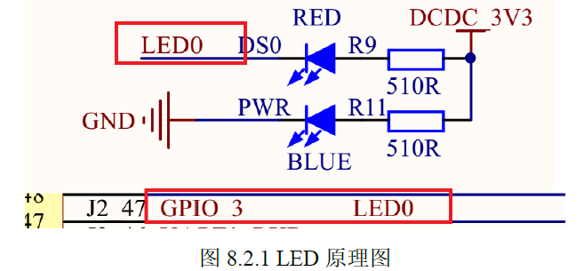
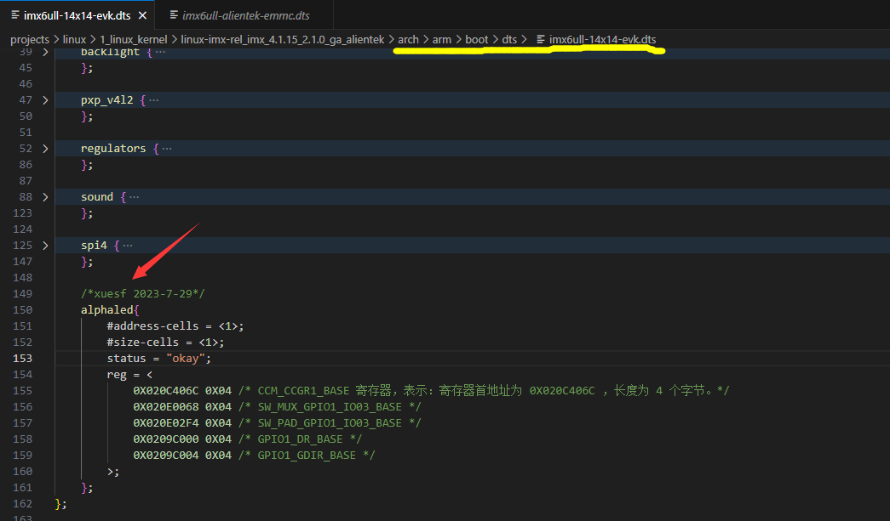
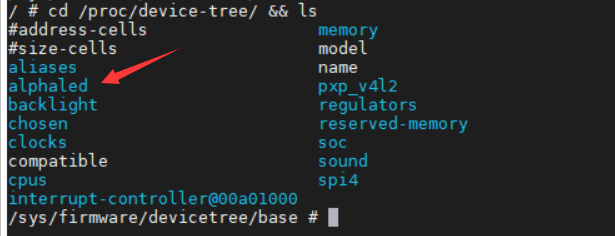
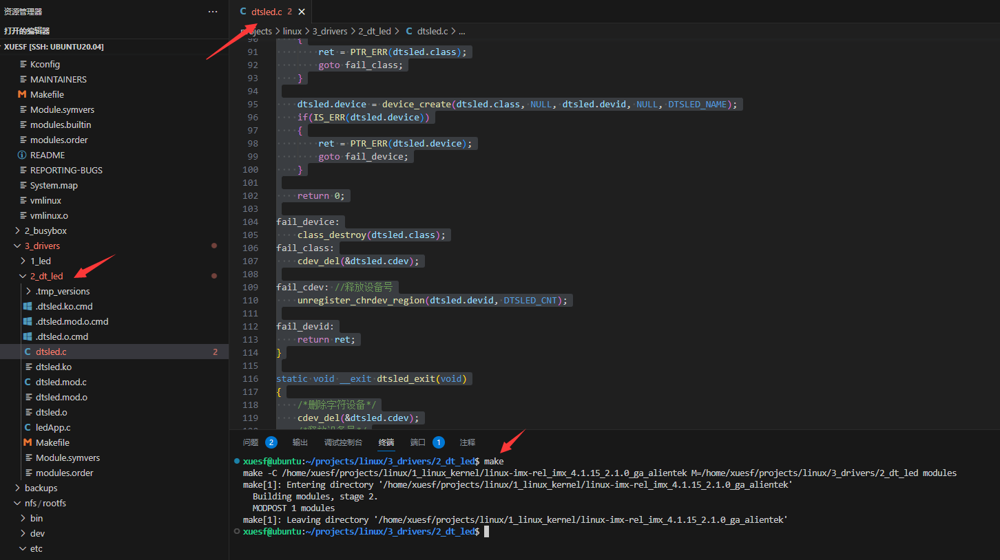
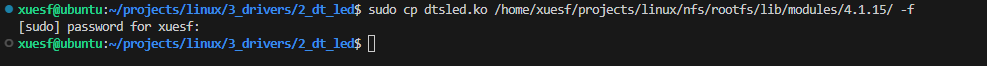
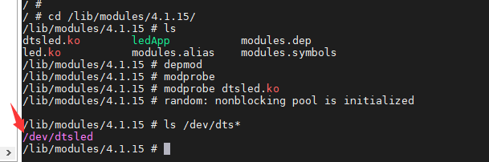
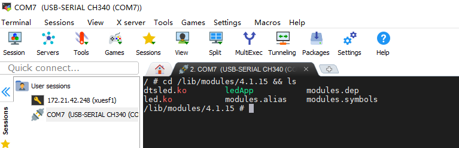

前言
本实验的重点
①、在 imx6ull-alientek-emmc.dts文件中创建相应的设备节点。 ②、编写驱动程序，获取设备树中的相关属性值。 ③、使用获取到的有关属性值来初始化LED所使用的GPIO。
❗：前面移植完后根文件系统后，要完善才可以测试本实验。
硬件原理图

实验程序编写
1、修改设备树文件
在Linux内核文件夹，进入/arch/arm/boot/dts文件夹，找到imx6ull-14x14-evk.dts设备树文件，在以下位置输入相关代码

/*xuesf 2023-7-29*/
alphaled{
#address-cells = <1>;
#size-cells = <1>;
status = "okay";
reg = <
0X020C406C 0X04 /* CCM_CCGR1_BASE 寄存器，表示：寄存器首地址为 0X020C406C ，长度为 4 个字节。*/
0X020E0068 0X04 /* SW_MUX_GPIO1_IO03_BASE */
0X020E02F4 0X04 /* SW_PAD_GPIO1_IO03_BASE */
0X0209C000 0X04 /* GPIO1_DR_BASE */
0X0209C004 0X04 /* GPIO1_GDIR_BASE */
>;
};
回到Linux根文件夹，执行以下命令编译设备树
make dtbs
复制编译好的设备树文件到共享文件夹，用于测试
cp arch/arm/boot/dts/imx6ull-14x14-evk.dtb /home/xuesf/projects/linux/tftpboot/ -f
在串口助手中，查看
cd /proc/device-tree/ && ls

2、LED驱动程序编写
搭建好驱动框架dtsled.c
#include <linux/module.h>
#include <linux/kernel.h>
#include <linux/init.h>
#include <linux/fs.h>
#include <linux/slab.h>
#include <linux/uaccess.h>
#include <linux/io.h>
#include <linux/cdev.h>
#include <linux/device.h>
#include <linux/of.h>
#include <linux/of_address.h>
#include <linux/of_irq.h>
#define DTSLED_CNT 1 //设备号个数为1
#define DTSLED_NAME "dtsled" //名字
/*dtsled设备结构体*/
struct dtsled_dev
{
dev_t devid; //设备号
struct cdev cdev; //字符设备
struct class *class; //类
struct device *device; //设备
int major; //主设备号
int minor; //次设备号
};
struct dtsled_dev dtsled; /*led设备*/
static int dtsled_open(struct inode *inode, struct file *filp)
{
filp->private_data = &dtsled;
return 0;
}
static int dtsled_release(struct inode *inode, struct file *filp){
struct dtsled_dev *dev = (struct dtsled_dev*)filp->private_data;
return 0;
}
static ssize_t dtsled_write(struct file *filp, const char __user *buf, size_t count, loff_t *ppos){
struct dtsled_dev *dev = (struct dtsled_dev*)filp->private_data;
return 0;
}
/*字符设备操作集合*/
static const struct file_operations dtsled_fops =
{
.owner = THIS_MODULE,
.write = dtsled_write,
.open = dtsled_open,
.release = dtsled_release,
};
static int __init dtsled_init(void)
{
int ret = 0;
/*注册字符设备驱动*/
/*1. 申请设备号*/
dtsled.major = 0; /*设备号由内核分配*/
if(dtsled.major) /*定义了设备号*/
{
dtsled.devid = MKDEV(dtsled.major, 0);
ret = register_chrdev_region(dtsled.devid, DTSLED_CNT, DTSLED_NAME);
}else{ /*没有给定设备号*/
ret = alloc_chrdev_region(&dtsled.devid, 0, DTSLED_CNT, DTSLED_NAME);
dtsled.major = MAJOR(dtsled.devid);
dtsled.minor = MINOR(dtsled.devid);
}
if(ret < 0 )
{
goto fail_devid;
}
/*2. 添加字符设备*/
dtsled.cdev.owner = THIS_MODULE;
cdev_init(&dtsled.cdev, &dtsled_fops);
ret = cdev_add(&dtsled.cdev, dtsled.devid, DTSLED_CNT);
if(ret < 0) {
goto fail_cdev;
}
/*3. 自动创建设备节点*/
dtsled.class = class_create(THIS_MODULE, DTSLED_NAME);
if(IS_ERR(dtsled.class))
{
ret = PTR_ERR(dtsled.class);
goto fail_class;
}
dtsled.device = device_create(dtsled.class, NULL, dtsled.devid, NULL, DTSLED_NAME);
if(IS_ERR(dtsled.device))
{
ret = PTR_ERR(dtsled.device);
goto fail_device;
}
return 0;
fail_device:
class_destroy(dtsled.class);
fail_class:
cdev_del(&dtsled.cdev);
fail_cdev: //释放设备号
unregister_chrdev_region(dtsled.devid, DTSLED_CNT);
fail_devid:
return ret;
}
static void __exit dtsled_exit(void)
{
/*删除字符设备*/
cdev_del(&dtsled.cdev);
/*释放设备号*/
unregister_chrdev_region(dtsled.devid, DTSLED_CNT);
/*摧毁设备*/
device_destroy(dtsled.class, dtsled.devid);
/*摧毁类*/
class_destroy(dtsled.class);
}
/*驱动入口函数*/
module_init(dtsled_init);
/*驱动出口函数*/
module_exit(dtsled_exit);
MODULE_LICENSE("GPL");
MODULE_AUTHOR("xuesf");
编译

复制到实际系统测试一下
sudo cp dtsled.ko /home/xuesf/projects/linux/nfs/rootfs/lib/modules/4.1.15/ -f

MobeXterm查看

完整代码
#include <linux/module.h>
#include <linux/kernel.h>
#include <linux/init.h>
#include <linux/fs.h>
#include <linux/slab.h>
#include <linux/uaccess.h>
#include <linux/io.h>
#include <linux/cdev.h>
#include <linux/device.h>
#include <linux/of.h>
#include <linux/of_address.h>
#include <linux/of_irq.h>
#define DTSLED_CNT 1 //设备号个数为1
#define DTSLED_NAME "dtsled" //名字
#define LEDON 1 //打开
#define LEDOFF 0 //关闭
/*地址映射后的虚拟地址指针*/
static void __iomem *IMX6U_CCM_CCGR1;
static void __iomem *SW_MUX_GPIO1_IO03;
static void __iomem *SW_PAD_GPIO1_IO03;
static void __iomem *GPIO1_DR;
static void __iomem *GPIO1_GDIR;
/*dtsled设备结构体*/
struct dtsled_dev
{
dev_t devid; //设备号
struct cdev cdev; //字符设备
struct class *class; //类
struct device *device; //设备
int major; //主设备号
int minor; //次设备号
struct device_node *nd; //设备节点
};
struct dtsled_dev dtsled; /*led设备*/
static int dtsled_open(struct inode *inode, struct file *filp)
{
filp->private_data = &dtsled;
return 0;
}
static int dtsled_release(struct inode *inode, struct file *filp){
// struct dtsled_dev *dev = (struct dtsled_dev*)filp->private_data;
return 0;
}
/*LED灯的打开和关闭*/
static void led_switch(u8 sta)
{
u32 val = 0;
if(sta == LEDON){
val = readl(GPIO1_DR);
val &= ~(1 << 3); /*bit3清零， 打开LED灯*/
writel(val, GPIO1_DR);
}else if(sta==LEDOFF){
val = readl(GPIO1_DR);
val |= (1 << 3); /*bit3清零， 关闭LED灯*/
writel(val, GPIO1_DR);
}
}
static ssize_t dtsled_write(struct file *filp, const char __user *buf, size_t count, loff_t *ppos){
// struct dtsled_dev *dev = (struct dtsled_dev*)filp->private_data;
int retvalue = 0;
unsigned char databuf[1];
retvalue = copy_from_user(databuf, buf, count);
if (retvalue<0)
{
printk("kernel write failed\r\n");
return -EFAULT;
}
/*判断是开灯还是关灯*/
led_switch(databuf[0]);
return 0;
}
/*字符设备操作集合*/
static const struct file_operations dtsled_fops =
{
.owner = THIS_MODULE,
.write = dtsled_write,
.open = dtsled_open,
.release = dtsled_release,
};
static int __init dtsled_init(void)
{
int ret = 0;
const char *str;
u32 regdata[10];
u8 i = 0;
unsigned int val = 0;
/*注册字符设备驱动*/
/*1. 申请设备号*/
dtsled.major = 0; /*设备号由内核分配*/
if(dtsled.major) /*定义了设备号*/
{
dtsled.devid = MKDEV(dtsled.major, 0);
ret = register_chrdev_region(dtsled.devid, DTSLED_CNT, DTSLED_NAME);
}else{ /*没有给定设备号*/
ret = alloc_chrdev_region(&dtsled.devid, 0, DTSLED_CNT, DTSLED_NAME);
dtsled.major = MAJOR(dtsled.devid);
dtsled.minor = MINOR(dtsled.devid);
}
if(ret < 0 )
{
goto fail_devid;
}
/*2. 添加字符设备*/
dtsled.cdev.owner = THIS_MODULE;
cdev_init(&dtsled.cdev, &dtsled_fops);
ret = cdev_add(&dtsled.cdev, dtsled.devid, DTSLED_CNT);
if(ret < 0) {
goto fail_cdev;
}
/*3. 自动创建设备节点*/
dtsled.class = class_create(THIS_MODULE, DTSLED_NAME);
if(IS_ERR(dtsled.class))
{
ret = PTR_ERR(dtsled.class);
goto fail_class;
}
dtsled.device = device_create(dtsled.class, NULL, dtsled.devid, NULL, DTSLED_NAME);
if(IS_ERR(dtsled.device))
{
ret = PTR_ERR(dtsled.device);
goto fail_device;
}
/*4. 获取设备树属性内容*/
dtsled.nd = of_find_node_by_path("/alphaled"); //查找设备树中的节点
if(dtsled.nd == NULL) //查找失败
{
ret = -EINVAL;
goto fail_findnd;
}
/*获取属性*/
ret = of_property_read_string(dtsled.nd, "status", &str);
if(ret<0){
goto fail_rs;
}else{
printk("status=%s\r\n", str);
}
ret = of_property_read_string(dtsled.nd, "compatible", &str);
if(ret<0){
goto fail_rs;
}else{
printk("compatible=%s\r\n", str);
}
/*获取reg属性*/
ret = of_property_read_u32_array(dtsled.nd, "reg", regdata, 10);
if(ret < 0){
goto fail_rs;
}else{
printk("reg data:\r\n");
for(i = 0; i < 10; ++i){
printk("%#X ", regdata[i]);
}
printk("\r\n");
}
/*LED 灯初始化*/
/*1. 初始化LED灯， 地址映射*/
IMX6U_CCM_CCGR1 = ioremap(regdata[0], regdata[1]);
SW_MUX_GPIO1_IO03 = ioremap(regdata[2], regdata[3]);
SW_PAD_GPIO1_IO03 = ioremap(regdata[4], regdata[5]);
GPIO1_DR = ioremap(regdata[6], regdata[7]);
GPIO1_GDIR = ioremap(regdata[8], regdata[9]);
/*2. 初始化IO*/
val = readl(IMX6U_CCM_CCGR1);
val &= ~(3<<26); /*先清除以前的配置bit26,27*/
val |= 3<<26;
writel(val, IMX6U_CCM_CCGR1);
writel(0X5, SW_MUX_GPIO1_IO03); /*设置复用*/
writel(0X10B0, SW_PAD_GPIO1_IO03); /*设置电气属性*/
val = readl(GPIO1_GDIR);
val |= 1<<3; /*bit3置1， 设置为输出*/
writel(val, GPIO1_GDIR);
val = readl(GPIO1_DR);
val |= (1<<3); /*bit置1， 关闭LED灯*/
writel(val, GPIO1_DR);
return 0;
fail_rs:
fail_findnd:
device_destroy(dtsled.class, dtsled.devid);
fail_device:
class_destroy(dtsled.class);
fail_class:
cdev_del(&dtsled.cdev);
fail_cdev: //释放设备号
unregister_chrdev_region(dtsled.devid, DTSLED_CNT);
fail_devid:
return ret;
}
static void __exit dtsled_exit(void)
{
unsigned int val = 0;
/*退出驱动的时候，将LED灯关闭*/
val = readl(GPIO1_DR);
val |= (1<<3);
writel(val, GPIO1_DR);
/*取消地址映射*/
iounmap(IMX6U_CCM_CCGR1);
iounmap(SW_MUX_GPIO1_IO03);
iounmap(SW_PAD_GPIO1_IO03);
iounmap(GPIO1_DR);
iounmap(GPIO1_GDIR);
/*删除字符设备*/
cdev_del(&dtsled.cdev);
/*释放设备号*/
unregister_chrdev_region(dtsled.devid, DTSLED_CNT);
/*摧毁设备*/
device_destroy(dtsled.class, dtsled.devid);
/*摧毁类*/
class_destroy(dtsled.class);
}
/*驱动入口函数*/
module_init(dtsled_init);
/*驱动出口函数*/
module_exit(dtsled_exit);
MODULE_LICENSE("GPL");
MODULE_AUTHOR("xuesf");
3、编写测试APP
#include "stdio.h"
#include "unistd.h"
#include "sys/types.h"
#include "sys/stat.h"
#include "fcntl.h"
#include "stdlib.h"
#include "string.h"
/***************************************************************
Copyright © ALIENTEK Co., Ltd. 1998-2029. All rights reserved.
文件名 : ledApp.c
作者 : 左忠凯
版本 : V1.0
描述 : chrdevbase驱测试APP。
其他 : 无
使用方法 ：./ledtest /dev/dtsled 0 关闭LED
./ledtest /dev/dtsled 1 打开LED
论坛 : www.openedv.com
日志 : 初版V1.0 2019/1/30 左忠凯创建
***************************************************************/
#define LEDOFF 0
#define LEDON 1
/*
* @description : main主程序
* @param - argc : argv数组元素个数
* @param - argv : 具体参数
* @return : 0 成功;其他 失败
*/
int main(int argc, char *argv[])
{
int fd, retvalue;
char *filename;
unsigned char databuf[1];
if(argc != 3){
printf("Error Usage!\r\n");
return -1;
}
filename = argv[1];
/* 打开led驱动 */
fd = open(filename, O_RDWR);
if(fd < 0){
printf("file %s open failed!\r\n", argv[1]);
return -1;
}
databuf[0] = atoi(argv[2]); /* 要执行的操作：打开或关闭 */
/* 向/dev/led文件写入数据 */
retvalue = write(fd, databuf, sizeof(databuf));
if(retvalue < 0){
printf("LED Control Failed!\r\n");
close(fd);
return -1;
}
retvalue = close(fd); /* 关闭文件 */
if(retvalue < 0){
printf("file %s close failed!\r\n", argv[1]);
return -1;
}
return 0;
}
编译
arm-linux-gnueabihf-gcc beepApp.c -o beepApp
将驱动和ledApp都拷贝到Linux
sudo cp dtsled.ko ledApp /home/xuesf/projects/linux/nfs/rootfs/lib/modules/4.1.15/ -f
运行测试
在串口控制台中，进入4.1.15文件夹
cd /lib/modules/4.1.15 && ls

加载驱动
modprobe dtsled.ko
执行驱动
./ledApp /dev/dtsled 1
❗：注意编译好的驱动，如需要Linux执行，需要先卸载之前的驱动，然后加载现在的驱动
modprobe dtsled.ko //加载驱动
rmmod dtsled.ko //卸载驱动
tips：
- 如果需要Linux启动时就加载好驱动，则需要在rcS文件中写好上面的驱动加载代码即可。